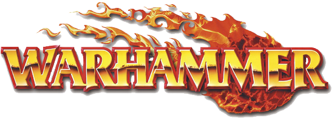
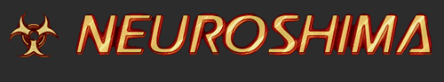
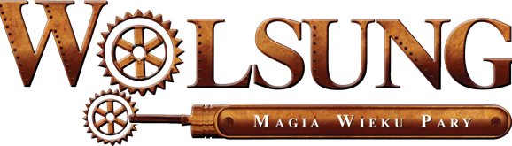

Dungeons & Dragons, w skrócie D&D lub DnD (ang. Lochy i Smoki) – najpopularniejsza i uważana za prekursora gatunku fabularna gra fantasy zaprojektowana przez Gary’ego Gygaxa i Dave’a Arnesona, po raz pierwszy opublikowana w 1974 przez Tactical Studies Rules (TSR). Aktualnie grę wydaje Wizards of the Coast, przedsiębiorstwo zależne od Hasbro. Publikacja D&D jest szeroko uznawana za początek nowoczesnych gier RPG i, co więcej, całego przemysłu role-playing.
Wyewoluowała ona ze strategicznej gry wojennej Chainmail, bazującej na planszach podzielonych na sześciokątne pola (powszechnie nazywane hexami). Trzecia edycja opiera się na mechanice d20 i pozwala na grę w różnorodnych światach fantasy. Gra była pierwotnie wydawana przez Tactical Studies Rules (TSR, później TSR Hobbies), wydawnictwo specjalizujące się w grach wojennych. W latach 90. firma straciła płynność finansową i została wykupiona przez firmę Wizards of the Coast (WotC), która tym samym nabyła prawa do marki Dungeons and Dragons. WotC najpierw wydało ponowione wersje podręczników podstawowych drugiej edycji Advanced Dungeons and Dragons, kilka własnych dodatków, by na przełomie wieków wydać już własną trzecią edycję gry (przy czym warto zauważyć, że nazwa brzmi Dungeons and Dragons 3rd Edition, podczas gdy ewolucja szła w następującym toku: Dungeons and Dragons → Advanced Dungeons and Dragons → Advanced Dungeons and Dragons 2nd Edition; nie ma tu więc logicznej kontynuacji, bowiem nigdy nie było drugiej edycji Dungeons and Dragons jako takiego. 6 czerwca 2008 nastąpiła premiera czwartej edycji gry, Dungeons and Dragons 4th Edition. Wydanie piątej edycji nastąpiło w 2014 roku.

Warhammer Fantasy Roleplay (WFRP lub WHFRP, z ang. Warhammer, Fabularna Gra Fantasy) – gra fabularna osadzona w świecie Warhammera. Została stworzona przez brytyjską firmę Games Workshop, a obecnie prawa do niej posiada Fantasy Flight Games. Dotychczas ukazały się jej trzy edycje. Pierwsza edycja systemu słynęła z tego, że ukazywała mroczny i ponury świat. Było to coś zgoła odmiennego od panującej ówcześnie mody na światy bardziej heroiczne. System miał w sobie także dużą dozę czarnego humoru, którym również różnił się od gier pisanych całkowicie „na poważnie”. Był również znacznie lepiej wydany od swoich konkurentów.
Światem, w którym toczy się rozgrywka w WFRP jest niby-germański i chylący ku upadkowi świat znany z gry bitewnej Warhammer Fantasy Battle. Będąc grą, która koncentruje się na pojedynczych postaciach a nie na całych armiach, WFRP pokazuje znacznie więcej szczegółów owego świata, niż jego bitewny odpowiednik. Postacie graczy to najczęściej mieszkańcy państwa zwanego Imperium, krainy umiejscowionej w Starym Świecie, luźno opartego na Świętym Cesarstwie Rzymskim. Inne ważne krainy Starego Świata to Bretonia oparta na średniowiecznej Francji i legendach arturiańskich, Kislev oparty na średniowiecznej Polsce, Czechach i Rosji, Estalia przypominająca Hiszpanię i Tilea przypominająca Włochy.
Jednym z najbardziej rozpoznawalnych czynników świata Warhammera jest Chaos. O ile siły Chaosu w Warhammer Fantasy Battle są przedstawione głównie pod postaciami straszliwych mrocznych rycerzy i zwierzoludzi o tyle w Warhammer Fantasy Roleplay jest wewnętrznym zagrożeniem dla całych społeczeństw. Sekretne kulty gnieżdżą się w każdej warstwie społeczeństwa i starają się zniszczyć ład społeczny osiągając tym samym własne, mroczne korzyści. Mutanci żyją w lasach okalających większe miasta zaś skaveni ryją pod nimi tunele.

Neuroshima – polska gra fabularna w konwencji postapokaliptycznej, której akcja osadzona jest w zniszczonych wojną atomową Stanach Zjednoczonych połowy XXI wieku. System jest wzorowany na grze Fallout oraz filmie Mad Max. Widać w nim również wpływy takich dzieł jak Aleja Potępienia (powieść Rogera Zelaznego), Terminator, Wysłannik przyszłości, Matrix czy Deadlands: Martwe Ziemie. Pierwotny tytuł gry brzmiał Necropunk, ale po rozpadzie grupy tworzącej grę na dwa odrębne zespoły, system (powstający na bazie tej części Necropunka, która stanowiła własność intelektualną wydawnictwa Portal) otrzymał obecny tytuł, będący odwołaniem do utworu zespołu Laaz Rockit, zatytułowanego „Euroshima”.
Według założeń systemu, 5 września 2020 potężny system komputerowy zyskał świadomość, uznał ludzi za wrogów i sprowokował wybuch III wojny światowej, podczas której maszyny użyły arsenału chemicznego i biologicznego (broni nuklearnej użyli sami ludzie), zabijając znaczną część populacji USA oraz powodując śmiertelne skażenie ziemi, wody i powietrza. Według informacji z podręcznika głównego, przeżyło ok. 1% populacji byłego USA. Lata po wojnie, w roku 2054 ludzkość próbuje się odrodzić. Formują się nowe państwa, jednak zagrożenie stanowią zarówno inni ludzie (np. gangerzy), jak i twór utworzony przez sztuczną inteligencję, zwany przez ludzi Molochem.
Cyberpunk 2020 (CP2020) - druga edycja utrzymanej w konwencji cyberpunka amerykańskiej gry fabularnej autorstwa Mike'a Pondsmitha pt. Cyberpunk. Wydana w 1990 roku przez R. Talsorian Games. Polska edycja ukazała się w 1995 roku nakładem wydawnictwa Copernicus Corporation w tłumaczeniu Jacka Brzezińskiego i Tomasza Jasinkiewicza. Jest to jedyna edycja tej gry jaka ukazała się na rynku polskim.
Uniwersum gry jest dystopijną wizją przyszłości osadzoną w roku 2020. Domyślną areną rozgrywanych przygód, opisaną w podręczniku podstawowym gry, są Stany Zjednoczone Ameryki Północnej. Późniejsze dodatki uzupełniły opis świata przyszłości o charakterystykę pozostałych regionów geopolitycznych. Prezentowaną wizję charakteryzuje większość klasycznych elementów prozy cyberpunkowej, w tym dynamiczny rozwój technologiczny, głębokie rozwarstwienie społeczne i duży wpływ ponadnarodowych korporacji na ekonomię i politykę międzynarodową. Napisaną w 1990 roku prognozę wydarzeń do roku 2020 cechuje jednak szereg nietrafionych założeń i predykcji, nadając tej wizji przyszłości charakter historii alternatywnej.
Gracze wcielają się w rolę cyberpunków - anarchizującej grupy społecznej łączącej ludzi o różnorodnym pochodzeniu etnicznym, społecznym i zawodowym. Jedynym elementem definiującym cyberpunka w CP2020 jest styl życia postaci, wyrażający w trzech tzw. Zasadach Cyberpunka:
Styl ponad Istotą - działania powinny być widowiskowe, nawet jeśli nieskuteczne
Poza jest wszystkim - wizerunek cyberpunka powinien zawsze sugerować najlepszego człowieka w branży
Żyj na Krawędzi - życie powinno być intensywne i ryzykowne, wypełnione przełamywaniem własnych słabości i ograniczeń
Zasady te określają jednocześnie charakter scenariuszy będących zwyczajowym tematem gry.

Wolsung: Magia Wieku Pary – polska steampunkowa gra fabularna. Pierwsza edycja, wydana przez Wydawnictwo Kuźnia Gier w 2009 roku, autorstwa Artura Ganszyńca oraz Macieja Sabata. W 2012 roku, została wydana edycja 1.5, z poprawionymi zasadami, lecz bez znacznych zmian mechanicznych. Oprócz podręcznika podstawowego, do stycznia 2015, ukazało się również sześć dodatków. Gra wydana jest w twardej i w miękkiej oprawie. Łączny nakład podręczników edycji 1 i 1.5 wynosi powyżej 3'000 sztuk. Wolsung był także pierwszą polską dużą grą fabularną wydaną w USA - wydawcą jest Studio 2 Publishing, na licencji Kuźni Gier, a premiera miała miejsce na Genconie 2012. Anglojęzyczne wydanie podręcznika dostało nominację do nagrody ENnies, w kategorii Best writing.
Akcja gry toczy się w steampunkowo-fantasy świecie, podobnym w założeniach do naszej rzeczywistości. Gracze wcielają się w role Niezwykłych Dam i Dżentelmenów, członków śmietanki towarzyskiej, stojących zawsze po pozytywnej stronie konfliktu. Gra w dosłowny sposób mówi, że postaci graczy są lepsze od przeciętnych ludzi, są bohaterami z pierwszych stron gazet. Niekoniecznie stoją po stronie prawa (patrz np.: profesja Przestępca), ale zawsze są pozytywnymi bohaterami opowieści. Typowe postaci nawiązują do klisz popkulturowych - archeolog-odkrywca, dziedzic fortuny, genialny detektyw, diva operowa z bogatą przeszłością, zamaskowany bohater walczący ze zbrodnią, superagent w służbie Królowej, uwodzicielska femme fatale.